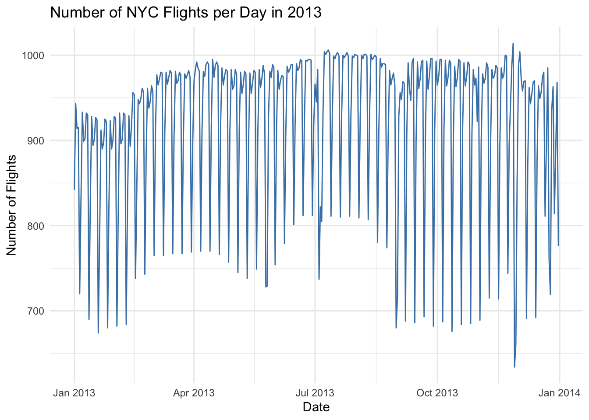
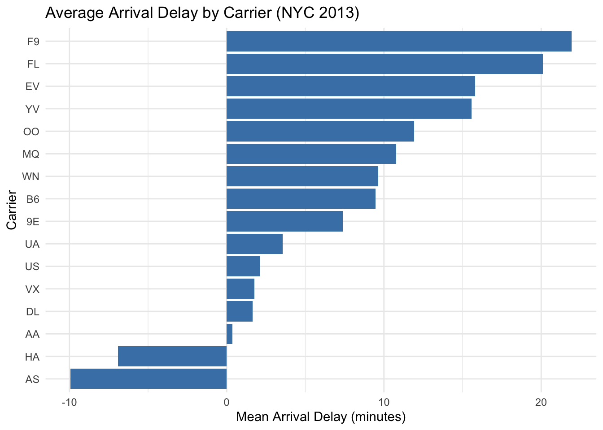
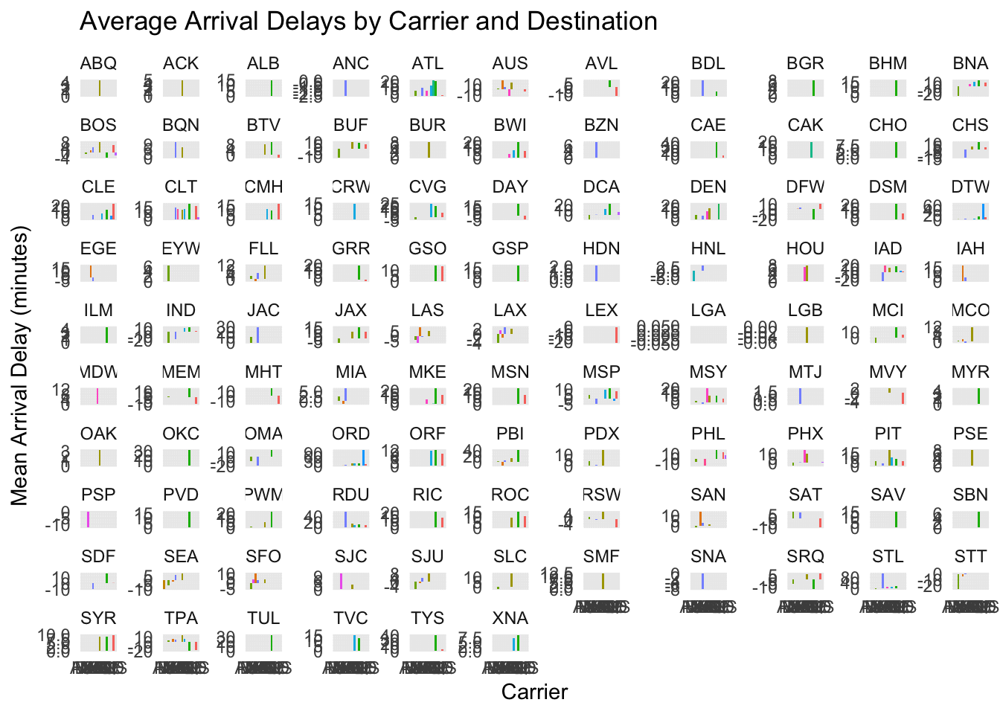

library(nycflights13)library(dplyr)library(ggplot2)# Count the number of flights per daydaily_flights <- flights %>%group_by(year, month, day) %>%summarise(n =n(), .groups ="drop")# Check if there are any days with zero flightsany_zero_days <-any(daily_flights$n ==0)any_zero_days # FALSE means there was at least one flight every day
[1] FALSE
# List the days with zero flights (if any)daily_flights %>%filter(n ==0)
# A tibble: 0 × 4
# ℹ 4 variables: year <int>, month <int>, day <int>, n <int>
# Visualization: number of flights per day in 2013ggplot(daily_flights, aes(x =as.Date(sprintf("%d-%02d-%02d", year, month, day)), y = n)) +geom_line(color ="steelblue") +labs(title ="Number of NYC Flights per Day in 2013",x ="Date",y ="Number of Flights") +theme_minimal()

problem 5
# Flight(s) with the farthest distancefarthest <- flights %>%filter(distance ==max(distance, na.rm =TRUE))# Flight(s) with the shortest distanceshortest <- flights %>%filter(distance ==min(distance, na.rm =TRUE))farthest
# Example 2: what happens if a variable name is wrongbad_vars <-c("year", "month", "day", "arr_dlay") # typo: arr_delay -> arr_dlay# any_of(): will quietly skip the missing columnflights %>%select(any_of(bad_vars)) %>%head()
# all_of(): will throw an error if any column is missing
Exercise3.3.7
problem 1
library(nycflights13)library(dplyr)library(ggplot2)# 1. Average arrival delay by carrieravg_delay <- flights %>%group_by(carrier) %>%summarise(mean_arr_delay =mean(arr_delay, na.rm =TRUE),n =n(),.groups ="drop" ) %>%arrange(desc(mean_arr_delay))print(avg_delay)
# A tibble: 16 × 3
carrier mean_arr_delay n
<chr> <dbl> <int>
1 F9 21.9 685
2 FL 20.1 3260
3 EV 15.8 54173
4 YV 15.6 601
5 OO 11.9 32
6 MQ 10.8 26397
7 WN 9.65 12275
8 B6 9.46 54635
9 9E 7.38 18460
10 UA 3.56 58665
11 US 2.13 20536
12 VX 1.76 5162
13 DL 1.64 48110
14 AA 0.364 32729
15 HA -6.92 342
16 AS -9.93 714
# Plot: average delay by carrierggplot(avg_delay, aes(x =reorder(carrier, mean_arr_delay), y = mean_arr_delay)) +geom_col(fill ="steelblue") +coord_flip() +labs(title ="Average Arrival Delay by Carrier (NYC 2013)",x ="Carrier",y ="Mean Arrival Delay (minutes)") +theme_minimal()

# 2. Carrier × destination delayscarrier_dest_delay <- flights %>%group_by(carrier, dest) %>%summarise(mean_delay =mean(arr_delay, na.rm =TRUE),n =n(),.groups ="drop" )# Weighted average (accounting for # of flights per destination)weighted_delays <- carrier_dest_delay %>%group_by(carrier) %>%summarise(weighted_mean_delay =weighted.mean(mean_delay, n), .groups ="drop") %>%arrange(desc(weighted_mean_delay))print(weighted_delays)
# A tibble: 16 × 2
carrier weighted_mean_delay
<chr> <dbl>
1 F9 21.9
2 FL 20.1
3 EV 15.8
4 YV 15.6
5 OO 11.3
6 MQ 10.8
7 WN 9.65
8 B6 9.46
9 UA 3.57
10 VX 1.77
11 DL 1.65
12 AA 0.359
13 HA -6.92
14 AS -9.93
15 9E NaN
16 US NaN
# 3. Compare carriers at the same destination# This shows whether a "bad carrier" is still worse at the same airportdest_carrier_compare <- flights %>%group_by(dest, carrier) %>%summarise(mean_delay =mean(arr_delay, na.rm =TRUE),n =n(),.groups ="drop") %>%arrange(dest, desc(mean_delay))head(dest_carrier_compare, 20) # show top few
# A tibble: 20 × 4
dest carrier mean_delay n
<chr> <chr> <dbl> <int>
1 ABQ B6 4.38 254
2 ACK B6 4.85 265
3 ALB EV 14.4 439
4 ANC UA -2.5 8
5 ATL FL 20.7 2337
6 ATL EV 19.6 1764
7 ATL MQ 14.0 2322
8 ATL UA 10.5 103
9 ATL DL 7.42 10571
10 ATL WN 6.90 59
11 ATL 9E 0.857 59
12 AUS AA 16.2 365
13 AUS B6 11.7 747
14 AUS UA 4.28 670
15 AUS DL 1.41 357
16 AUS 9E -3.5 2
17 AUS WN -11.2 298
18 AVL EV 8.80 265
19 AVL 9E -12.1 10
20 BDL UA 22.6 8
# 4. Visualization: mean delay by carrier, faceted by destinationggplot(dest_carrier_compare, aes(x =reorder(carrier, mean_delay), y = mean_delay, fill = carrier)) +geom_col() +facet_wrap(~ dest, scales ="free_y") +theme_minimal() +theme(legend.position ="none") +labs(title ="Average Arrival Delays by Carrier and Destination",x ="Carrier",y ="Mean Arrival Delay (minutes)")
Warning: Removed 2 rows containing missing values or values outside the scale range
(`geom_col()`).

problem 2
# Find the most delayed departure for each destinationworst_dep_by_dest <- flights %>%filter(!is.na(dep_delay)) %>%group_by(dest) %>%slice_max(order_by = dep_delay, n =1, with_ties =FALSE) %>%ungroup() %>%select(year, month, day, carrier, flight, origin, dest, sched_dep_time, dep_time, dep_delay, arr_delay)print(worst_dep_by_dest)
# A tibble: 104 × 11
year month day carrier flight origin dest sched_dep_time dep_time
<int> <int> <int> <chr> <int> <chr> <chr> <int> <int>
1 2013 12 14 B6 65 JFK ABQ 2001 2223
2 2013 7 23 B6 1491 JFK ACK 800 1139
3 2013 1 25 EV 4309 EWR ALB 2000 123
4 2013 8 17 UA 887 EWR ANC 1625 1740
5 2013 7 22 DL 2047 LGA ATL 759 2257
6 2013 7 10 UA 503 EWR AUS 1505 2056
7 2013 6 14 EV 4519 EWR AVL 816 1158
8 2013 2 21 EV 4103 EWR BDL 1316 1728
9 2013 12 1 EV 5309 LGA BGR 1056 1504
10 2013 4 10 EV 5038 LGA BHM 1900 25
# ℹ 94 more rows
# ℹ 2 more variables: dep_delay <dbl>, arr_delay <dbl>
problem4
df <-tibble(x =c(5, 2, 8, 1, 9))# 1. Positive n with slice_min(): pick the 2 smallest valuesdf %>%slice_min(x, n =2)
# A tibble: 2 × 1
x
<dbl>
1 1
2 2
# Expected: rows with x = 1, 2# 2. Negative n with slice_min(): drop the 2 smallest valuesdf %>%slice_min(x, n =-2)
# A tibble: 3 × 1
x
<dbl>
1 1
2 2
3 5
# Expected: rows with x = 5, 8, 9# 3. Positive n with slice_max(): pick the 2 largest valuesdf %>%slice_max(x, n =2)
# A tibble: 2 × 1
x
<dbl>
1 9
2 8
# Expected: rows with x = 9, 8# 4. Negative n with slice_max(): drop the 2 largest valuesdf %>%slice_max(x, n =-2)
# A tibble: 3 × 1
x
<dbl>
1 9
2 8
3 5
# Expected: rows with x = 5, 2, 1# Positive n: find the 5 most delayed departuresflights %>%filter(!is.na(dep_delay)) %>%slice_max(dep_delay, n =5) %>%select(year, month, day, carrier, flight, origin, dest, sched_dep_time, dep_time, dep_delay)
# Negative n: drop the 5 most delayed departures, keep the restflights %>%filter(!is.na(dep_delay)) %>%slice_max(dep_delay, n =-5) %>%summarise(total_remaining =n())
# A tibble: 5 × 3
x y z
<int> <chr> <chr>
1 1 a K
2 2 b K
3 3 a L
4 4 a L
5 5 b K
df |>arrange(y)
# A tibble: 5 × 3
x y z
<int> <chr> <chr>
1 1 a K
2 3 a L
3 4 a L
4 2 b K
5 5 b K
Arrange() reorders the rows of the data frame according to the values of one or more columns.
c
We expect to see a 2x2 table.
df |>group_by(y) |>summarize(mean_x =mean(x))
# A tibble: 2 × 2
y mean_x
<chr> <dbl>
1 a 2.67
2 b 3.5
group_by(y) tells R to treat rows with the same value of y as belonging to the same group, and summarize(mean_x = mean(x)) then calculates the mean of x within each group. The result is a collapsed summary table that contains one row per group along with the group labels and their corresponding summary statistics.
D
df |>group_by(y, z) |>summarize(mean_x =mean(x))
`summarise()` has grouped output by 'y'. You can override using the `.groups`
argument.
# A tibble: 3 × 3
# Groups: y [2]
y z mean_x
<chr> <chr> <dbl>
1 a K 1
2 a L 3.5
3 b K 3.5
group_by(y, z) divides the data into groups defined by each unique combination of y and z, and summarize(mean_x = mean(x)) then calculates the mean of x within each group. The result is a summary tibble where each row corresponds to a unique (y, z) pair along with its calculated group statistic.
# A tibble: 3 × 3
y z mean_x
<chr> <chr> <dbl>
1 a K 1
2 a L 3.5
3 b K 3.5
group_by(y, z) creates subgroups based on each unique combination of y and z, and summarize(mean_x = mean(x), .groups = “drop”) computes the mean of x within each subgroup while removing all grouping information from the result. The final output is a simple tibble with one row per (y, z) pair and no residual grouping.
F
df |>group_by(y, z) |>mutate(mean_x =mean(x))
# A tibble: 5 × 4
# Groups: y, z [3]
x y z mean_x
<int> <chr> <chr> <dbl>
1 1 a K 1
2 2 b K 3.5
3 3 a L 3.5
4 4 a L 3.5
5 5 b K 3.5
The summarize() pipeline collapses each group into a single row, producing a smaller tibble with one row per (y, z) combination, while the mutate() pipeline keeps the original number of rows and simply adds a new column containing the group’s mean repeated across all rows in that group. In other words, summarize() reduces the data, whereas mutate() augments it by attaching group statistics without changing the row count.